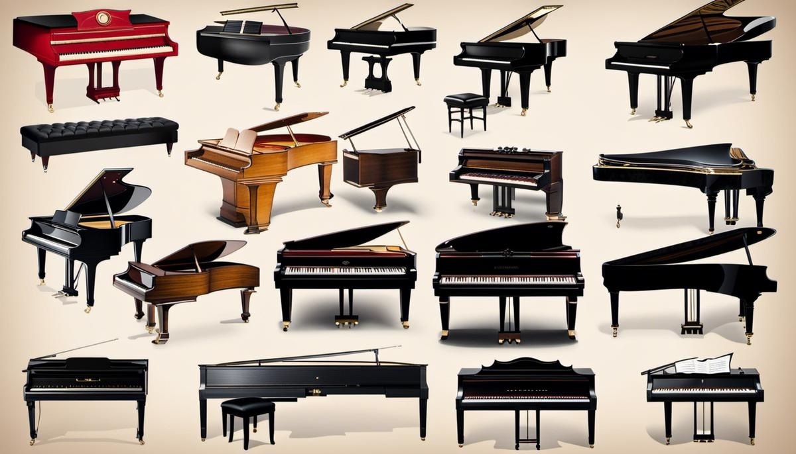
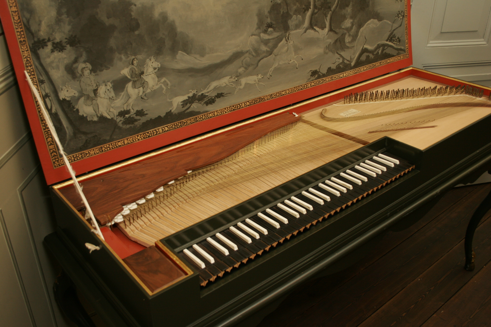
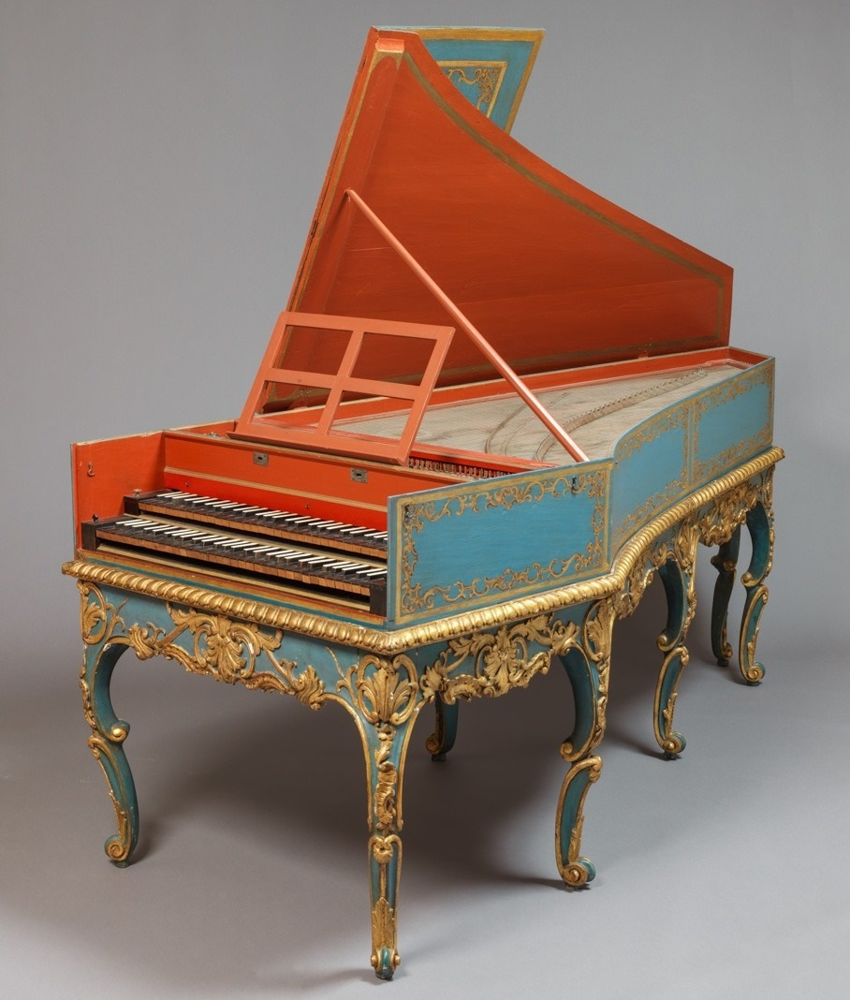
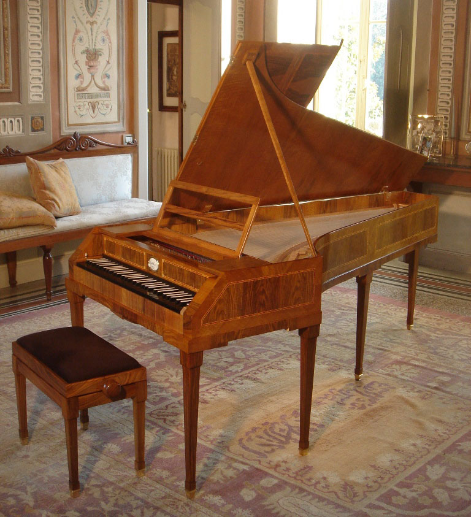
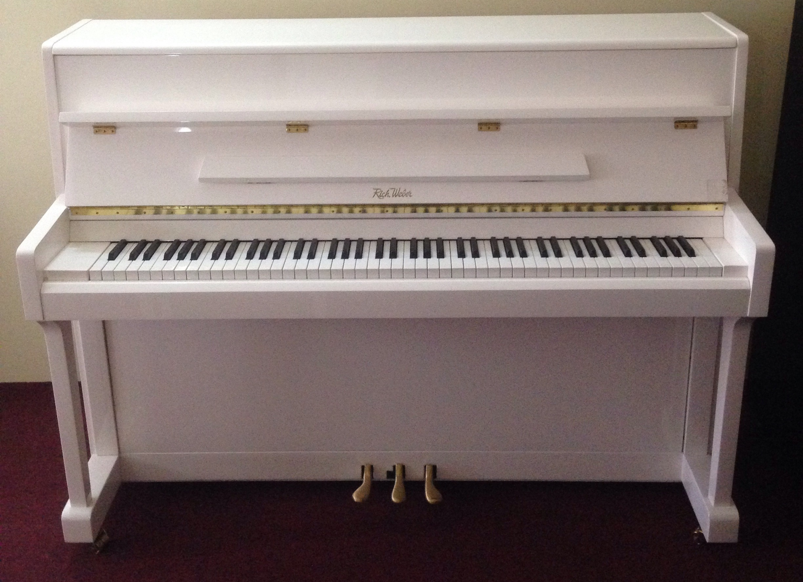
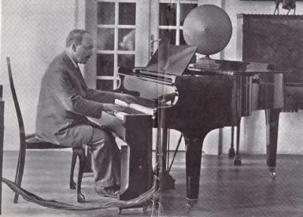
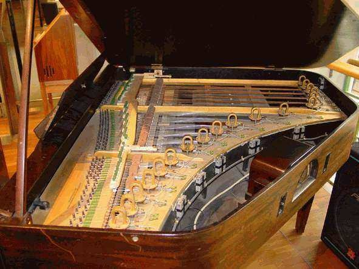

Pianul
Istoria Descriere Tipuri

Pianul este un instrument muzical acustic cu coarde inventat în Italia de către Bartolomeo Cristofori în jurul anului 1700, în care sunetul este produs de coarde metalice fixate pe o placă de rezonanță din lemn, lovite de ciocănele acoperite cu pâslă, prin intermediul unei claviaturi, care este compusă dintr-un rând de clape (mici pârghii) pe care interpretul le apasă sau le lovește cu degetele ambelor mâini. Pianele moderne au coardele montate într-un cadru metalic, de obicei turnat din fontă și finisat cu lac și pulbere de bronz (motiv pentru care este numit, impropriu, și „placă de bronz”). Acesta are rolul de a rezista tensiunii mari exercitate de coarde, care altfel ar deforma structura din lemn a pianului.
Istoria pianului

Povestea pianului începe la jumătatea secolului al XII-lea cu primul său strămoș - monocordul cu clape - căruia ulterior i-au fost adăugate mai multe coarde, transformându-se în mult mai cunoscutul clavicord, care funcționa printr-un mecanism de atingere a coardelor în momentul apăsării clapelor. Până la începutul secolului al XV-lea, clavicordul ajungea să aibă zece coarde, fiecare dintre ele producând cel puțin două note prin atingerea coardelor în două puncte diferite pe lungimea acesteia.
Un alt instrument premergător pianului a fost clavecinul, care producea sunete atunci când în urma atingerii clapelor coardele erau ciupite de pene de lemn, așa cum buricul degetelor ciupește coardele de chitară. Acesta avea însă dezavantajul de a nu permite celui care cînta să ofere dinamism muzicii. Deși a fost des utilizat pe parcursul a două sute de ani, până în secolul al XVIII-lea claviatura sa ajungând până la opt octave, clavecinul a pierdut treptat teren în fața unui nou instrument numit pianoforte. În 1709, italianul Bartolomeo Cristofori din Padova, fabricant de clavecine, începea construcția primului mecanism de pian pe principiul atingerii coardelor cu ciocănele, fără ca acestea să rămână în contact cu coarda după producerea sunetului. În plus, impactul ciocănelelor putea fi controlat cu ajutorul pedalelor. Denumirea de pianoforte, menținută până în 1850, a fost dată tocmai datorită acestui principiu de funcționare care permitea obținerea unui sunet variat și clar, mai lung sau mai scurt, mai tare sau mai încet, în funcție de dorința celui care acționa clapele. Invenția lui Cristofori a fost menționată pentru prima dată în 1711, împreună cu o schiță a instrumentului, într-un document scris de către Francesco Scipione Maffei, constituind sursa de inspirație pentru prima generație de fabricanți de piane. De-a lungul vieții, Bartolomeo Cristofori a construit aproximativ douăzeci de piane, doar trei dintre acestea, care datează din anul 1720, păstrîndu-se până în zilele noastre în muzee din Europa și SUA.

Clavicord

Clavecin

Pianoforte
O descriere a instrumentului

Interiorul pianului
Un pian acustic are o carcasă protectivă de lemn cuprinzând placa de rezonanță și coardele metalice, care sunt înșirate tensionate într-un cadru metalic. Apăsând una dintre clapele claviaturii un ciocănel căptușit (în mod uzual acesta este căptușit cu pâslă) este determinat să lovească coardele pianului. După lovire ciocănelul se ridică de pe coarde, acestea continuând să vibreze la frecvența proprie de rezonanță. Aceste vibrații sunt transmise printr-un căluș la placa de rezonanță care amplifică mai eficient aceste vibrații, transferând această energie acustică aerului din apropiere considerat cuplat din punct de vedere fizic cu aceasta. Când clapa este eliberată, un amortizor oprește vibrațiile coardelor, sunetul încetând astfel. Durata notelor poate fi prelungită chiar dacă degetele eliberează clapele pianului prin utilizarea pedalelor dispuse la baza acestui instrument. Pedala de susținere (cea din dreapta) le permite pianiștilor să interpreteze pasaje muzicale care altfel ar fi imposibil de interpretat, cum ar fi interpretarea unui acord de zece note în registrul jos urmând ca apoi, în timp ce acest acord este susținut cu pedala, mâinile să fie mutate în zona registrului mediu și să interpreteze o melodie sau arpegii peste sunetul acordului prelungit. Spre deosebire de orga cu tuburi și clavecin, două instrumente cu claviatură importante larg utilizate înainte de pian, acesta din urmă permite gradații ale volumului și tonului în funcție de cât de ferm interpretul apasă sau lovește clapele.
Cele mai moderne piane au un rând de 88 clape negre și albe, dintre care 52 albe pentru notele gamei Do major (Do, Re, Mi, Fa, Sol, La, Si) și 36 clape negre, mai scurte, ridicate deasupra clapelor albe și situate mai în spate. Aceasta înseamnă că pianul poate reproduce 88 de înălțimi sonore diferite (sau „note”), pornind de la gama cea mai gravă până la cele mai înalte registre. Clapele negre sunt pentru alterații (Fa♯/Sol♭, Sol♯/La♭, La♯/Si♭, Do♯/Re♭ și Re♯/Mi♭) care sunt necesare pentru a interpreta toate cele douăsprezece clape. Mai rar, unele piane au clape adiționale (care necesită coarde adiționale). Cele mai multe note au trei coarde, cu excepția bașilor, care merg gradat de la una la două coarde. Coardele devin sonore când clapele sunt apăsate sau lovite și sunt amortizate de amortizoare când mâinile sunt ridicate de pe claviatură. Sunt două tipuri principale de pian: pianul de concert numit și pian cu coadă sau grand piano și pianina. Pianul de concert este utilizat pentru solo-uri clasice, muzică de cameră și piese de artă și adesea este utilizat în concertele jazz și pop. Pianina, care este mai compactă, este tipul cel mai popular, având o mărime adecvată utilizării în case rezidențiale pentru compoziție și practică.
În decursul anilor 1800, influențate de curentele muzicale ale erei muzicale romantice, inovații cum ar fi cadrul de fontă (care a permis o mai mare tensiune în coarde) și cordajul aliquot au dat pianului de concert un sunet mai puternic, cu o susținere mai lungă și un ton mai bogat. În secolul al XIX-lea, pianul familiei a jucat același rol ca radioul sau fonograful în secolul al XX-lea; când familia secolului al XIX-lea dorea să audă o piesă muzicală nou publicată sau o simfonie, a putut asculta interpretarea la pian a unui membru al familiei. De-a lungul secolului al XIX-lea, editorii muzicali au publicat multe opere în aranjament pentru pian, astfel încât iubitorii de muzică au putut interpreta și asculta în casele lor piesele populare ale zilei. Pianul este larg utilizat în muzica clasică, jazz, muzica populară și muzica de larg consum, muzica de concert pentru pian solo sau pian și orchestră, acompaniament, compoziție muzicală și repetiții. Deși pianul este foarte greu și astfel neportabil și datorită faptului că este scump (în comparație cu alte instrumente utilizate pe scară largă în acompaniament, cum ar fi chitara acustică), versatilitatea sa muzicală (adică gama largă a notelor posibil de interpretat, posibilitatea de a interpreta acorduri, aceea de a interpreta note încet sau tare precum și posibilitatea interpretării a două sau mai multor linii muzicale în același timp), numărul mare de muzicieni amatori și profesioniști pregătiți să interpreteze și larga răspândire a locurilor de interpretare, școlile și sălile de repetiție au făcut din pian instrumentul cel mai familiar al lumii occidentale. Odată cu avansul tehnologic au fost de asemenea produse pianul electric amplificat (1929), pianul electronic (anii 1970) și pianul digital (anii 1980). Pianul electric a devenit un instrument popular al sub-genurilor muzicale jazz fusion, funk și rock ale anilor 1960 și 1970.
Diferitele tipuri de pian
Instrumentul cunoaște două forme constructive distincte:
-
Pianul cu coadă, în care corzile sunt dispuse pe orizontală într-o carcasă din lemn sprijinită, de obicei, pe trei picioare. Pianele cu coadă se împart, în funcție de lungime, în următoarele categorii:
- Pian cu coadă scurtă (lungime ~140–180 cm);
- Pian cu coadă medie (lungime ~180–230 cm);
- Pian cu coadă lungă (lungime ~230–300 cm) - cele mai lungi de ~240 cm sunt piane de concert.
- Pianina, în care corzile și carcasa sunt dispuse în plan vertical, pentru a ocupa mai puțin spațiu. Poate avea înălțimi variabile.
Calitatea sonoră a unui pian este proporțională, de regulă, cu lungimea acestuia (respectiv înălțimea, pentru pianine), mai ales în ceea privește claritatea și puterea registrului grav. Aceasta se explică prin posibilitatea utilizării, în pianele cu coadă lungă, a unor corzi mai lungi și a unor plăci de rezonanță mai bine adaptate frecvențelor diferite produse de corzi.

Pian cu coadă

Pianină
Pianul electric
Un pian electric este un pian care produce sunete mecanice care sunt transformate în semnale electronice cu ajutorul unor doze electromagnetice. Spre deosebire de sintetizator, pianul electric nu este un instrument electronic ci unul electro-mecanic. Primele piane electrice au fost inventate la sfârșitul anilor 1920.

Superpianul lui Emerich Moses Spielmann (1927)

Pianul Neo-Bechstein (1931)